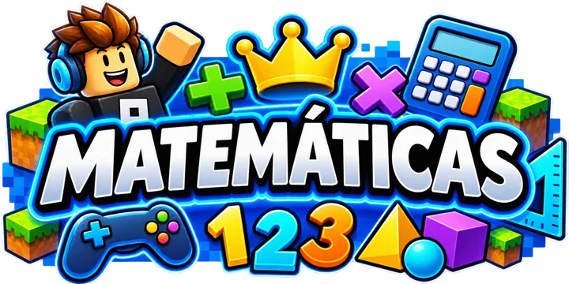

4.º de Primaria · Matemáticas · SA2 / SA3
Misión actual:
Cada parte tiene sus ejercicios. Antes de entregar, revisas tus respuestas. Usa el Apple Pencil en el borrador para hacer las cuentas.
Escribe con el Apple Pencil o con el dedo. Si usas el Pencil, la mano apoyada no pinta. Lo que escribas se guarda en cada ejercicio.
Antes de contestar:
Elige un tema. Cada bloque dura de 5 a 10 minutos: un paso cada vez y una pregunta rápida. No se avanza hasta acertar.
Las soluciones no aparecen en la ficha del alumno. Mantén pulsado el botón 2 segundos para entrar.
Con el procedimiento de cada ejercicio. También está en PDF en Imprimir A4.